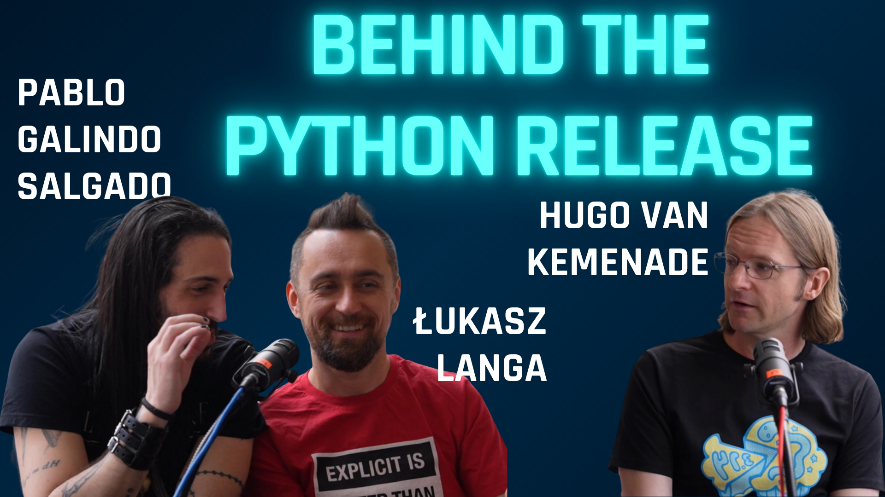

Behind the Python Release: Motivation, Fails & Rituals with Łukasz, Pablo & Hugo

In this episode, I talk with Hugo van Kemenade, Pablo Galindo Salgado, and Łukasz Langa about CPython release management—from the evolution of the release process to becoming a Release Manager and sustainable open source funding.
About the Guests
Hugo van Kemenade
Release Manager for Python 3.14 & 3.15, currently employed at the Sovereign Tech Agency as a fellow. Maintainer of open-source projects such as Pillow. Co-organizer of local Python events in Helsinki.
Pablo Galindo Salgado
Core Python developer, currently employed in the Software Infrastructure department at Bloomberg. Release Manager for Python 3.10 & 3.11, and a member of the Steering Council. Co-host of the core.py podcast.
Łukasz Langa
Python's Developer in Residence at the PSF and Release Manager for Python 3.8 & 3.9. Creator of Black, the opinionated Python code formatter, and co-host of the core.py podcast.
Episode Outline
- Most & Least Successful Releases
- Evolution of Release Process
- Release Schedule and Annual Releases
- Handling PRs and Reverts
- Becoming a Python Release Manager
- Motivation and Time Zone Challenges
- Release Rituals and YouTube Party
- Sustainable Open Source Funding Models
- Getting Involved & Further Listening
Links & Resources
Full Transcript
What I'm going to be doing, those like PEP 101 like old steps, like as long as I do... Organic releases. Organic releases. Not these like new age shit, like, you know, automated, no, no, organic. Yes, certified biological by the European
Union. But PEP 101, like, is something. You need to read it. Like, first of all, you need to Google and not press the first result because it's some Australian HIV, you know, program. Pablo's first release, actually. It was interesting because
that was like a pivotal moment for Python that never happened in the history of Python before. I'm also maintaining other projects like Pillar and like 10 or 20 other patches. And it's been interesting there to kind of improve the release
process. In 3 .10, I think I reverted the same thing six times. What does a Python release manager actually do? This is a conversation I had with three Python core developers, Vukas Langa, Pablo Galindo Salgado, and Hugo Van Kemenade. Vukas
and Pablo have been release managers in the past, while Hugo is the current one. Vukas works at the Python Software Foundation, Pablo at Bloomberg, and Hugo at the Server and Tech Agency. We talked about what really happens behind the scenes of
a release, the trickiest ones they have faced, how they even got into this role, and the fun little rituals such as YouTube release party they did. Okay, she was the release manager of Python 3 .8, 3 .9, Pablo 3 .10, 3 .11, and Hugo
3 .14 and 3 .15. Whose release was the least successful one? Who wants to pick this up? It wasn't mine. Not yet. No, no, no. It was not mine either. Okay, okay, okay. We have to establish some rules to judge this because I destroyed
GitHub as part of my release process. Is that good? Is that successful? We want to hear that story. Okay, so in 3 .10, it was 3 .10, no? So in 3 .10, we were in charge of... Well, in charge. We renamed the master branch to main. So GitHub
has this beautiful, kind of like, super cool process when you're supposed to just, you know, click the button, like, do it. But turns out that that do it worked for, like, you know, repos with, like, 100 issues or something. But, like,
we are kind of a big whale. And the moment it actually is recorded, I say something like, wouldn't it be fun if this breaks GitHub? And then immediately broke GitHub. And, you know, it was fun on the stream because I was recording this live at the
time. But then the thing I think it was not... clear is that we actually were reaching, we were in a back channel with GitHub, and the thing was on fire, because apparently it was some kind of, like, Ruby queue or something that is supposed
to migrate all the forks, and, like, it was too much, and it was destroying the thing, and, like, actually all the repos were 500 because of the queue, so if someone was changing from master to main at the same time, it was blowing up.
So, yeah, we kind of caused a big outage. But is that unsuccessful? I wouldn't say that. No, it's like we stress test lots of things that we like. We often find bugs in compilers when working on CPython and we found bugs in GitHub
too. So it is successful? Yeah. I would say that's successful. The unsuccessful ones that we've had, and I've had a bunch of those, like... uh hugo will have a bunch of those and um pablo also had a bunch of those is like the micro releases
that we identify have something seriously wrong with them so that happens every now and again and then you have to have like a hot fix release that is out of schedule you just have to say whoopsie and just go ahead and do another one
really quickly so There's been some of those where we broke ABI compatibility and it's like, oh, no, no, no. We need to just release another one. What fortunately happens more often is that a failed release fails during the release. So
before it actually goes out to people at some point in our testing, of which we have many levels, we identify like this actually doesn't work so well. We need to start over. Like we need to do a fix and actually do the entire thing. again
um but yeah there's been a few where we identify not one not two but like three regressions and in quick succession like we had to just like do another release with those fixes so we've just done this this year and did it cause any
delays uh like we sort of set our own schedule like this is based on like pep 602 that says like every year getting a new python in october um but the details of it like what the particular day we are doing a particular thing, like it's
up to the release manager to put in the reschedule for a particular Python version, like 3 .14 right now. And like delays would be like, you plan for this to happen on a Monday or Tuesday and while you kind of do it, like you're going to
do it on Thursday, maybe Friday. And those are usually stressful days because we're not sitting on our hands during those days, but like actually trying like to fix the regression or revert it. But sometimes it's not easy to revert it because
it's already. covered by a bunch of other changes, and so on and so on. So I wouldn't say delays, we set the time, but sometimes it is not a matter of like automation, of which we have a lot, but like actually just doing the work to allow for
a release. So you mentioned scheduling, what are all the things that release managers actually do behind the scenes? Hugo? Well, let's see, the kind of the main task of the release manager is to ensure that The quality of the release
is, you know, up to scratch because a lot of people use Python and depend on it. So we don't want everything to suddenly break for people in a bad way. So that's kind of the main thing is to like check that there's no, you know, bad
things going in there. Has it changed throughout the years? What was the difference within like release of 3 .09, for example, and between the release nowadays? or any improvements? Yes, yes. So when I started to be a release manager, I
inherited this horrible state of the art from Wookie Slanga. Because basically the releases are... Well, now I don't know. Maybe it's better with the time. But there is a big pep, I think it's Pep 101. Yeah, Pep 101. So Pep 101 that
was initially written by Larry Hastings, if I'm not incorrect. I think Barry. Or Barry, well... They all guard. So that basically has all the steps that you need to write. It's like a recipe. It's kind of a bit weird as well because I think
it was Larry who left a bunch of like, stop! Stop now! The idea is that you could search for those points. So it was very bespoke. And when I arrived there and I did it once for the first alpha maybe, I said, I'm not doing this by hand.
This is horrible. So I created this script called run -release. uh that was like automating this and it's kind of like it's not i mean it's a it's an interesting exercise on devops because it's not that easy to automate like you need
to ssh to servers you need to copy things from the servers you need to run things on the servers also like it's very likely that your process fails because random stuff. So you don't want to restart from the start just because your script
crashes in the middle. So there is checkpoints. So I try to automate as much as possible. And after that, I think the rest of it, like Thomas and Hugo, have been improving that. And now we actually run on GitHub Actions most of the process
because that was something that Seth did, our security developer in residence. And the reason is because... Before, we were running most of the release on our computers, which, you know, we like them a lot and we keep them clean and
whatnot and safe. But, you know, you could argue that, you know, you don't trust us. We are not that trustworthy. So now at least the build part runs in GitHub Actions, which you could argue that is reproducible. And, like, you know, people
can see it happening and whatnot. That was actually a surprise for me. So before I became release manager, I looked at PEP 101 and it's a huge PEP. There's so much detail there. But then at the core sprint in Brno, was it two years ago
or something? Thomas was making a release at the same time and he said, if anyone wants to see the process, just sit next to him. So I watched it. It's like, oh, actually, it's not as bad as this whole PEP 101. We should really, you
know, update that whole thing, but this is like, these are the manual steps if all our automation disappeared. Humanity is just destroyed and there is no computers and people want to know how we release Python. They have the recipe. We can
actually probably just truncate this pep by a lot, but not yet, because... I didn't quite trust Pablo's automation for my own releases, since those were very old. Python 3 .8 is now end of life. It's no longer released. And Python 3 .9
is going to probably see maybe one or two more before it goes end of life this October. So for this, I still use the Caveman PEP and the previous scripts, of which a lot... was already sort of automated, but just a particular step. There
was no checkpointing system to do the entire process. And it turned out that actually massaging this large big boy release automation, that took a few releases. That took a few years to get to the point where it doesn't crash in the middle
and now you're like, oh, I don't actually know where to go from here. So it is great now. It allows us to do GitHub Actions. whatever but just so that people don't get the wrong idea like yeah i do have my own sort of like pristine
ubuntu vm for the three nine releases they're only security they don't have any installers anymore like they're they're just source releases what i'm going to be doing those like pep 101 like old steps like as long as i do organic releases
organic releases no not these like new age like you know automated no no organic yes certified biological by the european union um yes certified bio and are there any things that surprised you when you inherited the old release process Yeah,
well, PEP 101 is something. You need to read it. First of all, you need to Google and not press the first result because it's some Australian HIV program, whatever. And it's like, wow, cool. You need to be really careful about that. You
go to PEP 101 and it is a super long PEP. There's a lot of like, you log into this machine, copy files over from here to there, making sure that permissions are correct and whatever. So yeah, the sort of process had more steps than I thought.
So now that the fact that they are automated is great. What does help me is knowing that even if there's automation for stuff like for other branches, like I did release a bunch of other branches as well when I had to step in, somebody
was unavailable. So I did those releases with the automation. So at least I know what the steps are from PEP 101 because I did so many of my own manually. So if something goes wrong, I know, okay, actually it expected this to happen. Pablo's
first release actually was interesting because that was like a pivotal moment for Python that never happened in the history of Python before, where the second digit or the second number had two digits now. So 3 .10, like it turns out that
a ton of like scripts, a ton of code, a ton of infrastructure just did not expect that there's going to be 3 .2 digits now. And like that took some fixing. And how does the schedule work? So if I submit a hotfix, for example, or a bugfix,
how do you decide what goes into which release? So we have different types of release. So right now, the main branch is for Python 3 .15, which will be released in October next year. So all new features go into that. And we'll start doing
alpha releases for that in May next year. And right now we have 3 .14 is the forthcoming one. So no more features are allowed in there. The cutoff for that was in May as well. And so there we only have bug fixes coming now, which will
be then released in October. Then for the older releases, we have some which are in bug fix only. It's just 3 .13. It's 3 .12, no. 3 .13. It's only 3 .13. And then we have a few which is security now. So that's 3 .9 up to 3 .12. So they only
get security fixes. So we hardly ever merge anything into them branches because it's only like security. And then the bug fix releases then, we make a release for them every two months. But the security is kind of on demand whenever we think that,
okay, this is our time to do something. Were there any changes in the past or it was exactly the same? Well, when I started, the releases were like every 18 months -ish. But there was no actual calendar of releases, which was pretty
problematic for upstream, you know, kind of distributors or for downstream distributors like Linux distributions, because they never knew like where a new Python version would appear. So very often a new Linux version would have like Ubuntu or Debian or Red
Hat would have like a pretty old Python. And that was before because there was no synchronization between the calendars. And, you know, they had to just. take whatever was stable at the time. Worse yet, we didn't even know ourselves. So
like 18 months often actually end up... ended up being like almost 24 months so there were just like many changes in like that you can gather in like two years right so like i wrote like pep 602 to just make sure that like we are synchronized
with the linux distributions and fedora like now could always pick up the latest python version developed that year so for that same year like they had like the latest version ubuntu did the same not sure if they're still doing it like
i haven't checked like lately but like that's why we have done the annual releases and it actually It works very well with our conferences and the annual course print week and so on. So like, you know, actually having all of that, it's like,
I guess, like a disabled rhythm that people just enjoy. I don't think this is going to be changing. Yeah, it makes a lot of sense. It's predictable. So you know when it's coming out. And like, just with like 3 .14, 3 .15, you kind of know when
the cutoff starts, like May for the Alfred Spitzer and stuff like that. I think it's also great for contributors because, like, before, if you make, like, a good feature and you want to show everyone or, like, use it yourself, like, it
was two years, right? Like, that's a bit sort of crushing. Even today, it's a bit sort of crushing. Like, we have very recently to say to some contributors that were very excited to get something on 3 .14 that, hey, like, no. Like, you need to wait
a year and, like, two months or three months, right? But now it's just, I mean, a year is still a lot of time, but, like, it's a bit more palatable than just, you know, like... two years, which is a lot. Do you ever get angry messages from
people expecting something to be merged? All the time. Actually, the release manager has this ability to revert a thing. So if you're like, there is... a feature somebody's really proud of it but like then we identify well and it crashes
just sometimes so like we give people some time to like you know please fix it so they try they poke at it and whatever but like it is just not working at some point that reason has to say like well we're gonna be doing a release soon
so how about this i'm gonna reverse your thing you can work on it still but like it's not gonna land in this release and um You would think that people get emotional about this, but like my experience was that usually not. Like people
are understanding, like, okay, there is needs to go through and, you know, okay, we can fix it later on and reapply the change when we already know that it's of better quality. So in three times, I think I reverted the same thing six
times. Like, I mean, not six times, one on top of the other. Obviously, like revert, try again, revert, try again. You know, the person in particular was like very chill. Like, I mean, understanding. But yeah, part of the job is being a bit of a
cat herder, let's say. So you need to tell people no, you need to know that you make an exception for someone, then you need to make an exception probably for more people. So the first exception is a bit tricky, at least in my experience. And
then you need to constantly judge, like, okay, this change is compromising the release. Because sometimes... Let's say like the standard is different for different people. I mean, we all have a high standard, but like, you know, release manager
must have the highest standard. So, you know, like sometimes it's not cutting it and you need to say, well, you know, this looks good, but like it's not really as good as it should. So like, you know, you either fix it now or like
we need to rip it out. And, you know, you become the grinch of it and you need to be ready for that. So it's not a job to make friends. I heard actually, With Kubernetes, the release manager is there. If the feature has been merged, but
the documentation isn't there by some deadline, they will revert the feature. So, for example, now T -Strings is merged, but the documentation isn't there. So, if we did the same thing... Oh, I forgot to revert it. Yeah, revert that.
Revert T -String. We don't have that policy, though. Not yet. Not yet? Well, like, every release manager, like... kind of adheres to the same general rules but like yeah the flavor differs so you know kind of you're gonna have different
interactions different willingness to like you know kind of bend the rules like okay i'm gonna like let you commit your feature like on beta too because okay like look look sensible other people are gonna be like no it's just you know
it's just too risky whatever so like this is why the the kind of selection of a risk manager is sort of like a demonstration of trust right because like you need to like just think that like that particular person will not just do
something weird that is going to put Python in a situation where we need to do more hotfix releases. Hopefully not. Hopefully this is a very rare occurrence. So you mentioned trust. It's very important for the community and for core developers
to trust the release manager to be able to make the best decision. So how does one become a release manager? Secret. The secret cabal discusses. We kind of... look for someone who's interested and hope that they will volunteer and then commit
the next seven years of their life, basically, to doing two releases. I mean, we are changing this a bit because, like, the process has been a bit obscure, let's say, and we are trying to move towards more open processes these days.
So, I mean, the release manager mainly is literally called cabal at python .org, right? there's no such there's no okay okay sorry sorry so basically one person volunteers and the team says yes yes or sometimes like so for instance it changes
as well depending on the current release manager like what i did for example was to ask for volunteers first so i sent an email saying like okay you know like it's time for a new release manager have you found any yeah yeah i mean at the time
we had already people but i'm very annoying with this and i believe like You know, everybody will have the same blah, blah, blah. But, like, that's not a requirement, right? So for now, like, normally there is one or two candidates that were already
interested. Like, for instance, Hugo here was saying that in the quarter there has been Bernal, he was shadowing Thomas during the release because he was interested already. So, like, Thomas knew, okay, he will, you know, and if you stick around
and it is only one person, normally it's that person. If there is many, then it's a different thing. So now we still don't have this finalized. Literally, we are... talking about this as we speak but like we are talking about involving
the string council a bit more uh not particularly so this thing also chooses but like so the same way the the like the working groups that we have will make suggestions to the Sting Council and the Sting Council ratifies just to ensure that
everything looks good. Then a similar way, the release managers will make a suggestion and the Sting Council checks. This is important because we want to ensure that the process is fair and we have diversity in the candidates as well.
It's not just like... because release manager choosing the next release manager can be can feel a bit endogamic right but it's important because they they will know who makes a good release manager as we can see it's not a trivial
thing but we want to involve some kind of like external entity that can ratify this a bit more so ensure that we are not like you know and it's a conversation so they're not going to just say no not that candidate you know so it's like okay
have you think about this or like what if this or that but we are still figuring that out so if you have more candidates do you have some formal vote or do you just agree Right, like, um, essentially, it comes down to, you know,
people just sharing their opinion on like, which candidate they would rather have, because the trust component isn't about like, oh, like, is your moral spine to my standard. Like, it's, you know, obviously, like, you need to feel that,
like, okay, that member, that new member of the team, like, I can trust that person to do the right thing. But the trust component is, like, much larger. It is responsibility that you are requiring from somebody, like, for six years,
right? Because, like, it's five years per release, but the second one is going to only start, like, a year from now. And it's also another year because you're... You have 17 months of pre -release. Right. Yes. Yes. So like, you know, so like,
right. So it is a very long time commitment. So the trust component is really looking at like, you know, does this person look like their life is in a place where we can, because it's a little unreasonable. Those are volunteers. Like we can
expect them to be around for like seven years. Right. This is a long time, like a lot can change in somebody's life in that timeframe. So, you know, kind of, we are considering different aspects there. Like, you know, it might be like a little
like, you know, okay, you know, you're looking at my, well, I don't know, work history or whatever, where I live or whatever, but you need to sort of know that this person is not going to disappear halfway through because... Like it is, as we
discussed, not only about pushing the button and the automation, but there is a lot of decisions that are being made about like changes that didn't work out so well. And what then, you know, or, oh, you just barely missed the calendar. And
what then? So you want continuity for a given release and somebody who remembers that, oh, this code, which is getting increasingly older, like I still have like a pretty good understanding in my head, like at which stage. three nine is
versus what we have in main this comes into place when you have security only releases and you need to think about how far those things can be backported like some backports are just are not reasonable to make but some have to be even
if they're very hard because security like is paramount so you know kind of all of the selection all i'm saying is that you know the entire team of Previous release managers on this mailing list that does not exist, the release managers
there go all the way back. All release managers are part of this mailing list, so they can voice their opinion, like concerns or support for a particular candidate and so on. Have you ever had the case that someone disappeared, got hit
by a bus or something happened and you had to replace your release manager? I vaguely recall that there was some change a long time ago in the history of Python, but I don't even recall the details or who that was. All I know is that
there was one particular unlucky release manager who signed up for Python 2 .7, and it turned out to be a gig that he, at the time he stopped doing it, he was doing for half his life. He was a young release manager and Python 2 .7 lived
for very many years and it was maintained for a long, long time before we transitioned fully to Python 3. So I'm pretty sure Benjamin did not expect to do it for so long, but he did. Like all of that time, he was very dependable
and available. When I made the release schedule for 3 .14, which was a pep some 4 .5, so I pulled the dates for the pre -releases. But then you also put, which will be supported until end of life in October, 2030. And that was the first
time I saw that year in black and white and realized that I'm committing myself to work on this. So what motivated you to volunteer for that role? It kind of did look quite interesting because I'm also maintaining other projects like Pillow
and like 10 or 20 other patches. And it's been interesting there to kind of improve the release process. Because when you can... release easily um then you can just get things out to people much more quickly there are some projects where
they have fixes but they've not released for a long time and people are kind of waiting for it and it's like well you've already done the work and why not get it to people um so like things like trusted publishing now is very good
so you can just release all in the ci um with pillow we used to have a process where we would the windows wheels were built by someone in california So I'd do the release, start it, we'd make the tag, I'd make the Linux wheels and Mac ones,
and then contact the guy in California, say, could you do the Windows wheels? Then I wait for him to wake up, you know, 10 hours later or something, and then he'll make them and then finish off. So improving processes like that
is kind of quite rewarding, I think. What was your motivation? Was it the same or did you have any different one? I mean, my motivation was to, because like I see how the process was done. I said like, this is horrible. This is disgusting.
Like, so I will fix it. No, no, I'm just kidding. I don't know. It's like, I suppose like when you're in this kind of community, like you're always looking for ways to be useful, right? And like, you know, you not only need to find
things that make you happy, but like to find ways that you can maximize your impact, right? this job even if it sounds like oh release manager you know like who that sounds important no i mean it's like you know glorify cat further right
again so so but but a lot of like what happens normally is that people don't want to do it because it's five years, you need to be there. And now the release happens when the release happens. I have made releases in the plane or my way to
a wedding or something. So it's a responsibility and it's a responsibility that you can do to serve. And then there's many ways to do it. And at the end, you have a nice split of things that make you happy and it's different. That's something
that I really wanted to do. um yeah oh and in my case i was um i i lived in the us at the time um and the previous men release managers were almost all in the us and they actually reached out to me saying like hey would you like to do
this and i'm pretty sure like the fact that i was in the right time zone ish like actually had uh something to do with them reaching out specifically to me saying like you know you could be doing this because i've been uh working on
infrastructure at facebook and like using python for it and like you know talking a lot about this and they're like well it looks like this is sort of similar to what we actually need from release management so i considered it and like
sounded fun to me and then i moved back to europe and they were like well, so this is going to make it a little weirder for like talking to like the people who are doing like the Mac OS and Windows installers who are different people
like on our team. Plus like maybe if you do a release and it's like night in the US, like this is not going to work out. Like this is going to be weird. But at the time they already like agreed that this is going to be me. So I started
doing it, but it turned out, you know what? Like actually it's fine. And ever since, you know, this is a little bit of a like, you know. bad pattern for diversity. But it turned out that all of the release managers so far are people
in Europe. Yes. So like, you know, it was Pablo next. And then we had like Thomas, and now we have Hugo, all of us being in Europe. So maybe it's time to actually break that streak again. But you know, kind of it just goes to show that
there's some consideration coming into selection of our release manager. And maybe not all of them are like kind of risk that is realistic because now we know after COVID that like work remotely and, you know, kind of working across
time zones is perfectly reasonable. At the time, it wasn't so clear. Do you have any release rituals? I heard that once the two of you threw a party on YouTube. This is because I just want everybody to look like a clown. Like I'm the clown attractor.
So I think at the time, basically, one of the problems is that this process, even if Pep101 was there, always felt a bit mysterious. You know, like someone goes and misses a release and the release happens. There are two things.
One, I want to demystify this a bit. And the other thing is like, I want to show how hard is this because it's like hours and very annoying. And also I hoped, and I don't know, you will tell me, but I hope that other people will see
it and say, well, I can actually do this. You know, it's annoying, but it's not like rocket science, right? It's just like a lot of clicks at the time. So I was thinking about whether it was the best way. the first time i think beta
1 of 3 .10 so i did like a stream on my own uh which went well a lot of people were saying i think is when we destroy github at the time nice um and then i thought well you know like that is kind of cool but like maintaining the stream
at the same time you're doing it And all sorts of things can go wrong in the stream. I flashed one of the API keys, a bunch of things. Not fantastic. So I talked with the people at Python Discord, and they really liked the idea of maintaining
the stream and inviting all the people of the Python Discord. And at that point, I said, well, I don't want this to be all me. So I said, well... Looking at how a person just clicks buttons and runs scripts is kind of fun the first time, but
the other times... So you basically live -streamed it. Yeah, from start to finish. So I did one from beginning to end, like four hours or something, and people stick out there, so that was amazing. But I thought, well, the second time is a bit
different, but it's the same thing again, right? So I said, well, I still would like to do it with more people. So at the time, we said, okay, let's do this idea of a release party. and for the real release like the three to three ten
final release so the idea was that meanwhile i was doing the release uh so i invited a bunch of people i think it was carol you And the idea is that people, co -developers, will talk about the features that they added. And they will explain
a bit, like a mini conference maybe, like a mini presentation, and people could ask questions. And in the middle, people will see how it's going. So it will cut basically from, you know, Luca's talking about typing to how it's going in the
release. And I was like, oh, everything is burning. And like, okay, okay, good luck with that. And then, you know, switch into something. And that worked really well. I think that worked really, really well. People really enjoyed it. And we
did one more for 3 .11. And then Thomas is a more serious person and he's not feeling like doing live streams. So that's where it stopped. But yeah, yeah, yeah. And is Hugo a more serious person or is Hugo a party person? I've not decided
yet. Not decided yet? One of us. One of us. One of the little rituals that I sort of like... added to release management was that we have release notes, right? So that means if you go to the Python downloads page for a particular
release, for a particular micro version, so a 3 .9 .11 or whatever, like you're going to see this blurb or like, this is Python 3 .9. This is the stage of its lifecycle. It's in like, those are the major changes there. Like click
here for the change log or if there's security content, we'll highlight it and say like, those are the security fixes there. And I felt like, okay, this is what. needs to be there, but also there might be things that don't need to be there,
but I would like it to be there. So for my releases 3 .8 and 3 .9, what I was doing before security releases that nobody reads those release notes anymore, but for all the kind of alphas and betas and the final, well, big final release and then
bug fixes, I would add, and now for something completely different and just, you know. quotes from Monty Python sketches because very many people as we've seen just yesterday at the conference and on the quiz don't even know that like Python
comes from the Monty Python comedy group so yeah so I was adding like small snippets like I tried not to choose the most like controversial ones and yet some people felt like I went a little far with some of the quotes but you know those
were my releases well like you you know Monty Python there's like life of Brian there's like meaning of life like there was four seasons of the comedy show so some of the sketches were like you know like pushing the envelope a bit
and some of them let's just say didn't age as well as others right so like i was i was i thought pretty careful about choosing the right ones but it turns out well you know kind of opinions differ so for 310 and 311 you know um pablo decided
okay i'm gonna keep the the section but i'm gonna put something entirely different in it and that actually is what the section name suggests so like we kind of kept it and every Other release manager has kept the section, but just put different
things on there. So you have different backgrounds. Pablo, you work for Bloomberg, which is a commercial entity. Lukasz, you're employed at the PSF, which is an American nonprofit. And Hugo, you work for the Server and Tech Funds, which is backed
by the German government. Which of these models do you think is the most sustainable and the best for open source? Like models? Do we need more companies supporting open source? Or do we need more non -profits? Or do we need more
institutions and governments supporting open source so people can do it as a part of their daily job and they don't have to do it only after work and on weekends? What an interesting question, actually. I think it's just how they are orthogonal,
no? I mean, the boring answer is like you need everything, right? In the sense that so obviously like For big projects, for instance, right now we have several co -developers in residence. Those are people that the PSF pays, but that
money normally comes from people that donate to this. And the nature of the, at least, American non -profits is that when you donate money to the foundation, normally, with some exceptions, you need to donate it to a project. So for this
thing, it's not just general... thing that then the non -profit administers right with some exceptions but which means that this means that you will need companies that wants to advance this because like money doesn't appear from nowhere right
and even like for salaries of people working full -time and to be a competitive option because they could say well you know i could work for python and you know if it's just donation from random members in the community that's not only
probably not going to be enough, but also it's very unsustainable in the sense of what happens if one of the years we just experienced, right? So you want someone who can commit a bit more. So we need these companies for sure. And it's
important for us to have a good relationship with the companies, even if people don't like it. But also it's important to have obviously the foundation that can administer the thing and can then have some control over like, okay,
yes, yes, you won. this and that because you know maybe you know the commercial entity wants this but like you know what we have in mind is this kind of thing are you interested so it kind of says that the goal and the direction and then
you know it's also very important to uh talk with uh like governments and like these kind of entities because they are regulating a lot of the market right now for instance europe and america are heavily regulating open source in
different ways and other things like with for instance dora and nist those are security related things and uh open source impacted like for instance right now everybody wants s -bombs right which is like this bill of materials that contains
how your software is built And that is kind of a weird relationship because it's work for us, right? But nobody pays us to do it, but they demand it somehow. And there is a weird unspoken relationship between all these entities together
that needs to happen because the companies consume this, they are bounded by the regulations. So when they consume open source, they need us to do it. So at the end, like if we say, for instance, well, we are not doing S -bonds, you know, because
the German government doesn't have anything to say to us, but then the companies are not going to do it. to donate to us because they cannot use our software, right? So it's a weird kind of interdependency and you need all the actors
to be coordinated and understand every other point of view because the government can say, well, you need this thing for tomorrow. Well, how? So there is a conversation that needs to happen constantly between the entities. What
are your thoughts? Do you agree with everything said or do you have a different view? Yeah, I think we do need a combination because Like open source, the whole point is that here's free software for you to use. And then everyone comes and uses
it for free, like all these companies. I mean, as they should, like we're saying, take this for free. But it's good that they should contribute back as well. But for some companies, it can be hard. Like, how do you contribute? Maybe you
give money. That could be an easy way. But then who do you give the money to? You can give it to a foundation or something. But then there's lots of just solo developers. How will they get it? And maybe the money's not going to even help
them because they just don't enjoy working on this anymore. So that's probably where the developers' residence and what I'm doing at the Sovereign Tech Agency. So we're maintaining it so we can also do the kind of not -so -exciting jobs. So
when you're working full -time on it, you can have availability to be there to respond when, for example, if someone has a problem on the CI, then I can maybe respond because I'm online. and also with the release management actually
is very good because it can take quite a while for the release um and if something gets delayed then it's like it's okay i don't need to juggle my day job about it because it is my day job well i i agree with everything said essentially
uh the creation of a foundation that protects your trademark and actually allows for the community to grow in a healthful way and provides the infrastructure for the project and so on that is sort of separate. It is funded by, sponsored by, but it is separate
from the corporate entities, allows for like a healthy independence, right? Like this actually means that even the companies contributing to the success of the PSF feel like there is a level playing field, that this is not a corporate project
of a single company, which essentially also gives us a level of kind of trust in the fact that like we're going to be by our ability to work on it full time that we're not going to be steering it towards like interests of a single like multi
-billion dollar corporation like what we are doing is like actually something that is like for the good of the project for the good of the general user like and there is very many kinds of users for python um so this sort of disconnect
between uh you know a company and the worker who I am, for example, I think is pretty healthy. Like my work has been sponsored for multiple years now by Meta. I used to work for Facebook before that, but now I can fully commit to working
on Python and I don't have to consider any kind of, I don't know, focuses or any kind of priorities that Meta might have for Python in this current, I don't know, quarter. or half, like, or whatever. I don't need to think about Facebook shareholders
right now. What I'm doing is I'm focusing on Python. And if they find that, okay, this is good enough of a job, like they sponsored me for the next year, and that's great. When I started this, a lot of people were saying, well, this
is risky business, right? Because you're sponsored for a year, and then they renew it for a year, and then they renew it for a year. What if they don't renew it? But it turns out that in this current market that we have right now, like,
having, like, at least your work security for a single year could be worse, right? Like, at least you know, like, that you're sort of, like, you can focus on your projects or whatever, like, for the next 12 months, and then we'll see. We've
seen recent layoffs in companies. Exactly. Exactly right. And if someone is interested in your release management and would like to talk to the current release manager because their tools, for example, depend on Python or they're just curious, How
can they contact you or how can they learn more? They can, what can they do? I don't know. Contact us anywhere online, really. If they're at your Python, then come up to us. If we're at any other conferences as well. There is also a webpage.
I don't remember the... If you search, like, release manager Python .org, you will see there is a web page in the Python .org web that shows every release manager, the email address that they want to be contacted at, and also you can
see the different keys that we have used, although we are changing a bit, hopefully in the future. But, for instance, if you are running a distribution, you probably want the GPG keys just to show the release. And now it's the sixth or whatever,
whatever. But a lot of people still use the GPG keys. For older releases, though. All right. New releases, we don't use. Okay, okay. Lucky you. Okay. I hate the GPG key. I just hate it. It's some stupid incantation. Okay. Anyway, so
you can see it there and you can see names and emails and maybe or maybe not GPG keys, you know. And if someone is interested in CPython in general, what are some good ways to contribute and how to get started? come to the Sprint next week,
and other conferences too, like PyCon US. Otherwise, have a look at the Dev Guide, which has kind of advice on getting started. Also, watch Savannah's keynote from Europython. It is very good about how to get started. Are there any other contributions
except of code contributions? What if I can't write C, for example, if I could just write Python? Are contributions welcome as well? Yeah, definitely. Like, I don't do much C nowadays. So, I mean, there's a lot of Python in Python and documentation
and it's just a very big project. So it touches a lot of ground. And if people would like to find you on the internet, where are you? Everywhere. You also have a podcast, right? We do have an established podcast, which is, in fact, about
core Python development. So if you're interested in that and you don't want to listen to podcasts at 1 .5 speed, because Pablo already talks at 1 .5 speed naturally, that's how he's made, you can listen to core .py. It's available on Spotify,
Apple Podcasts, and there's an RSS, so you can use whatever client that you want for that. Our cadence is a little spotty, but we... arrived at, like, 24 episodes for now, so if you want, like, insight on a particular piece, we're always
having a different subject matter for, like, every episode. Yeah, like, that's the... We would be happy if you listen. Far from the podcast, social media? Yeah, Mastodon, Blue Sky, Cougar VK. Thank you for coming. Thank you.
having a different subject matter for, like, every episode. Yeah, like, that's the... We would be happy if you listen. Far from the podcast, social media? Yeah, Mastodon, Blue Sky, Cougar VK. Thank you for coming. Thank you.